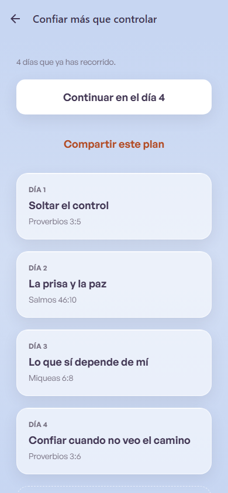
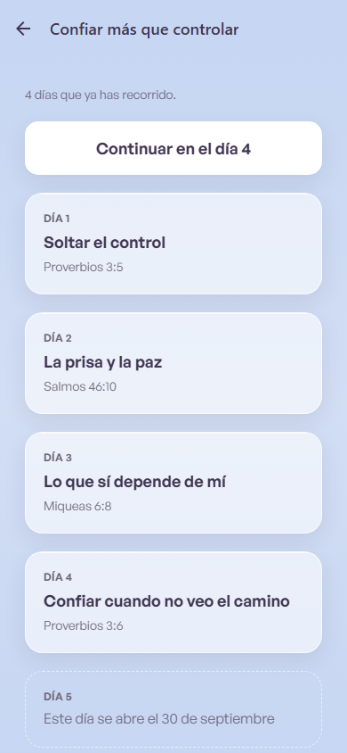
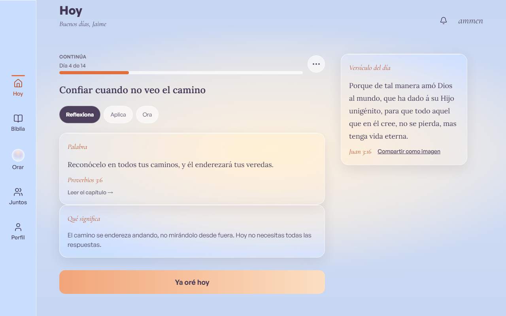
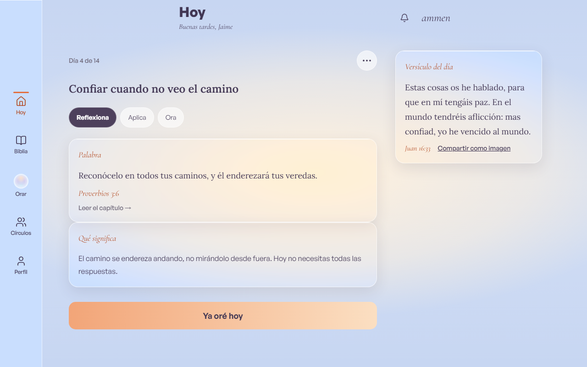
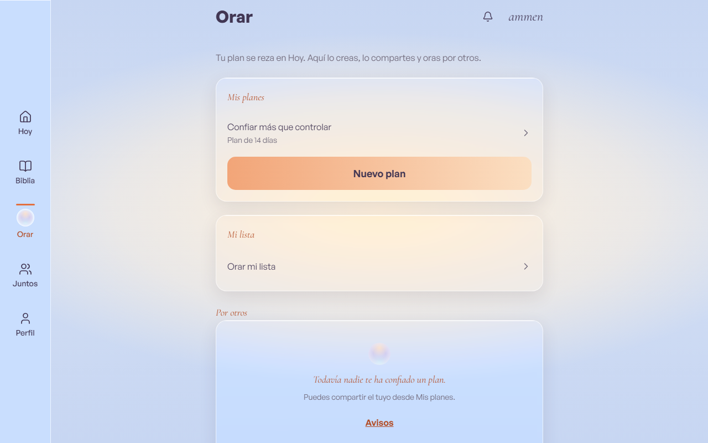
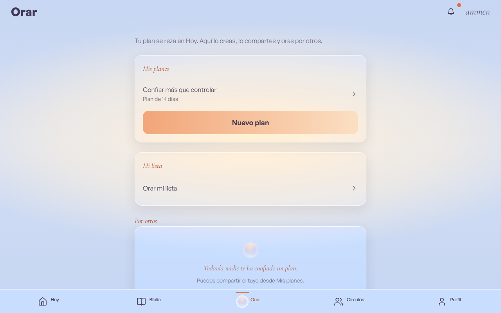
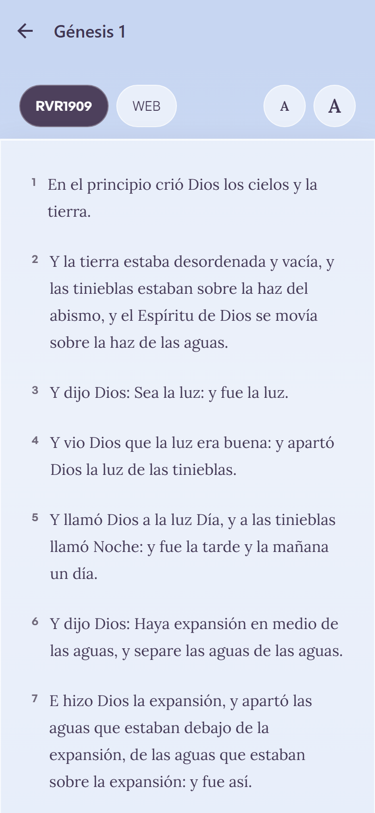
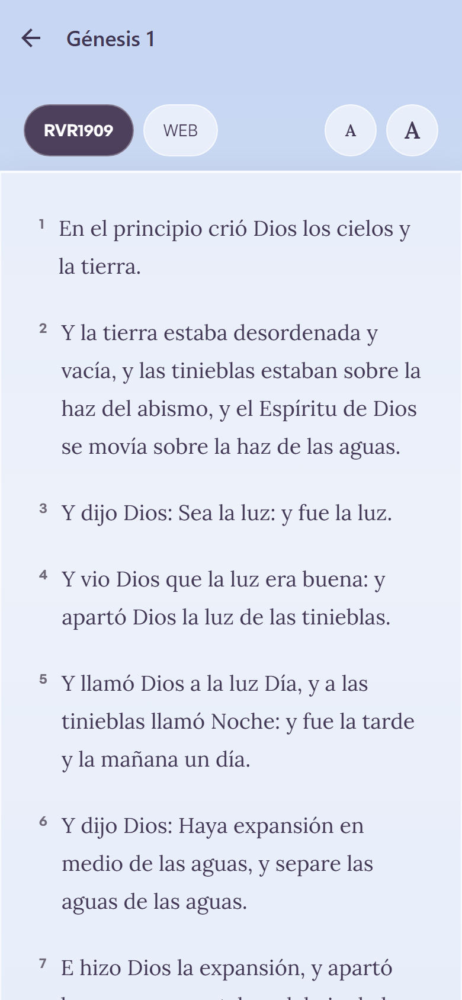
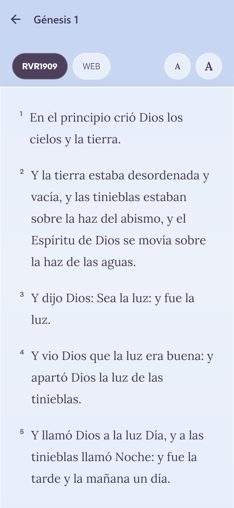

Del 7 al 8 de octubre: una auditoría de grasa en el código, la causa real del CI en rojo,
una limpieza automática de fotos huérfanas, un fallo oculto que hubiera impedido enviar
correos y avisos, y los ajustes de diseño pendientes. Todo verificado.
✓ CI completo en verde (run 37772109027, 23 min)
01Lo que hicimos
Limpieza del código (auditoría)
Revisamos los 312 ficheros de la app, las 63 funciones del servidor y las dependencias buscando
lo que nadie usa. Dos cosas muertas, eliminadas sin tocar nada más. El resto del código quedó igual.
El CI estaba en rojo y nadie sabía por qué la causa raíz
Las comprobaciones automáticas fallaban con cada cambio desde hacía días. La causa: una regla de
permisos de seguridad se había ajustado a mano en las bases locales, pero nunca se guardó en el «plan» que
se aplica en cada base nueva. Resultado: cada comprobación montaba una base limpia donde la regla volvía a estar
rota. Lo versionamos (migración api_role_default_privs) y el CI volvió a verde con las 15 suites de
base de datos pasando sobre una base recién montada.
Fotos de perfil huérfanas nuevo
Cuando alguien se borraba la cuenta o cambiaba de foto, a veces la foto vieja se quedaba en el
servidor para siempre. Ahora hay una limpieza diaria automática: encuentra las fotos sin dueño y las borra de
verdad. Verificada de cabo a cabo en local: se sube una foto huérfana, se dispara la limpieza, y el fichero
físico desaparece.
El fallo que nadie veía: los avisos automáticos no viajaban el hallazgo
Probando la limpieza anterior, descubrimos que el sistema que «mandar cosas automáticamente»
(recordatorios, correos, avisos de oración) llevaba desde septiembre un fallo oculto: le faltaba una llave para
abrir la puerta del servidor, y como el error pasaba en silencio, nadie lo notaba. Sin este arreglo, al
encender el programador, ni el correo ni los avisos habrían salido jamás. Lo arreglamos para los tres
sistemas a la vez y dejamos guardado un test que lo impediría de nuevo.
Diseño: lo que el prototipo medía y la app no cumplía
Jerarquía de títulos coherente: el título del día en la vista de un plan era más grande que en sus dos hermanas; ahora las tres usan el mismo tamaño.
Tres tamaños pendientes del diseño original: rótulos de tarjeta a 16 px (se veían a 18), la oración de la lista a 24 px (se veía a 18), y las etiquetas del menú inferior de escritorio a 11,5 px (se veían a 14).
Las «fotos de referencia» que detectan cambios visuales se regeneraron en los dos sistemas (Windows y Linux) y las 20 capturas de la prueba de usuario se volvieran a tomar.
02Verificación
Todo lo anterior pasó el control completo del proyecto, que tarda 23 minutos y que ahora vuelve a ser verde:
✓ 1358 pruebas unitarias
✓ 15 suites de base de datos sobre una base recién montada (antes era imposible)
✓ Pruebas de usuario completo en navegador (64)
✓ Regresión visual en claro y oscuro, 11 pantallas por modo
Un detalle honesto: una captura (Avisos, móvil) falló una vez por un fallo de toma de foto —dos
avisos superpuestos a mitad de transición, un 1% de píxeles, en una pantalla que ningún cambio tocó. El
reintento pasó y todo quedó verde.
03Para tus ojos (la sesión pendiente J8)
Cuatro pares antes/después de los cambios de diseño. Cada uno viene con la pregunta que te corresponde
responder.
El título del día en un plan (la vista compartida)

Antes Título grande (estilo «portada»), desentonaba con el resto.

Después Mismo tamaño que en Hoy y en el día del plan.
¿Pregunta¿El título así te parece coherente, o querías que fuera exactamente el otro (más grande)?
La pantalla de Hoy (rótulos de tarjeta y menú inferior)

Antes Rótulos «Palabra» / «Qué significa» a 18 px; etiquetas del menú a 14 px.

Después Rótulos a 16 px (como medía el diseño); etiquetas del menú a 11,5 px.
La pestaña Orar (mis planes / mi lista)

Antes «Mis planes» / «Mi lista» a 18 px.

Después A 16 px, como el resto de rótulos de tarjeta.
El lector de la Biblia (letra y botón A− / A+)
La letra del lector ahora respeta los tres tamaños. Las tres capturas son el estado actual:
compruébalo con los ojos (era lo que pedía el pendiente).

A− (pequeño)

Base

A+ (grande)
¿Pregunta¿Los tres tamaños se distinguen bien? ¿El A+ no se te hace demasiado grande?
04Lo que queda de tu lado
Staging (lo más urgente — hay una seguridad abierta esperando)
La fuga del chat de círculos (quien salía de un círculo seguía dentro) sigue abierta en staging
hasta hacer db push. El orden exacto está en docs/runbooks/staging-web.md, resumido:
Restaurar el proyecto en el panel de Supabase y copiar la base (pg_dump).
db push (trae todas las migraciones nuevas, incluida la regla de permisos arreglada).
Poner los 4 secretos en Vault + 3 en la nube (instrucciones en docs/runbooks/secrets-sync.md).
Desplegar las 7 funciones del servidor (ahora incluye la limpieza de fotos).
Descartar lo acumulado (skip_stale_queue_rows) y encender el programador: ahí es donde por fin viajan los correos y avisos.
Probar en remoto y desplegar la web.
Decisiones tuyas
Legal antes de producción: revisión corta de consentimiento (datos de creencias, Art. 9) y región del servidor. Bloquea el correo en producción, no el de staging.
Cloudflare: dos claves para el captcha anti-abuso en el alta de cuentas (el código ya está listo).
Docker Hub: una clave para que las pruebas automáticas dejen de parpadear por límite de descargas (2 minutos de trabajo).